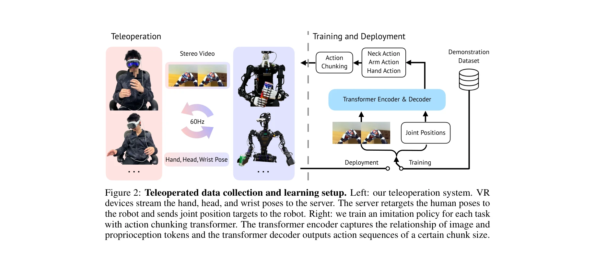
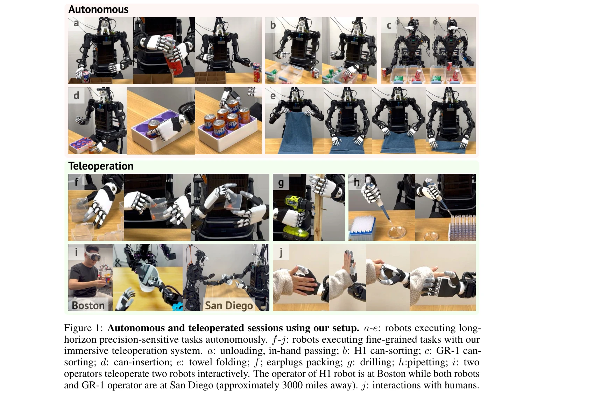

저자: Xuxin Cheng, Jialong Li, Shiqi Yang, Ge Yang, Xiaolong Wang | 날짜: 2024-07-01 | URL: https://arxiv.org/abs/2407.01512

Figure 2: Teleoperated data collection and learning setup. Left: our teleoperation system. VR
Apple VisionPro 등 VR 기기를 활용하여 스테레오 영상 피드백과 로봇 헤드의 능동적 카메라 제어를 통해 직관적이고 몰입감 있는 원격 조종 시스템을 구현하고, 이를 통해 수집한 데이터로 모방 학습 정책을 훈련하여 복잡한 조작 작업을 자동화함.

Figure 1: Autonomous and teleoperated sessions using our setup. a-e: robots executing long-
Figure 2: Teleoperated data collection and learning setup. Left: our teleoperation system. VR
총평: 본 논문은 VR 기반 능동적 헤드 카메라와 스테레오 영상 피드백을 통해 직관적이고 몰입감 있는 원격 조종 시스템을 제시하며, 이를 통해 수집한 데이터로 복잡한 조작 작업을 성공적으로 자동화할 수 있음을 입증함으로써 로봇 학습 데이터 수집 분야에 실질적인 기여를 함.